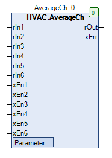

AverageCh (FB)¶
FUNCTION_BLOCK AverageCh
Kurzbeschreibung¶
Bildung eines Mittelwerts aus bis zu sechs gewichteten numerischen EingangsgrößenTypische Anwendung: Bildung eines Raumtemperaturmittelwerts aus verschiedenen Fühlern
Darstellung¶

Schnittstellen¶
Eingänge¶
Name Datentyp Wertebereich Initialwert Funktion rIn1 REAL Analogwerteingang 1 rIn2 REAL Analogwerteingang 2 rIn3 REAL Analogwerteingang 3 rIn4 REAL Analogwerteingang 4 rIn5 REAL Analogwerteingang 5 rIn6 REAL Analogwerteingang 6 xEn1 BOOL Freigabe Analogwerteingang 1 xEn2 BOOL Freigabe Analogwerteingang 2 xEn3 BOOL Freigabe Analogwerteingang 3 xEn4 BOOL Freigabe Analogwerteingang 4 xEn5 BOOL Freigabe Analogwerteingang 5 xEn6 BOOL Freigabe Analogwerteingang 6
Ausgänge¶
Name Datentyp Wertebereich Initialwert Funktion rOut REAL Mittelwert xErr BOOL Sammelstörung
Sollwerte / Parameter¶
Name Datentyp Wertebereich Initialwert Funktion iLoading6 INT 10 Gewichtung - Analogwerteingang 6 iLoading5 INT 10 Gewichtung - Analogwerteingang 5 iLoading4 INT 10 Gewichtung - Analogwerteingang 4 iLoading3 INT 10 Gewichtung - Analogwerteingang 3 iLoading2 INT 10 Gewichtung - Analogwerteingang 2 iLoading1 INT 10 Gewichtung - Analogwerteingang 1
Funktionsbeschreibung¶
Mittelwert rOut¶
Der Mittelwert wird gebildet, in dem die Analogwerteingänge rInX mit ihrer individuellen Gewichtung iLoadingX multipliziert und
anschließend alle Produkte aufaddiert werden ( Divident ).
Die Summe der Gewichtungen wird durch die Addition der individuellen Gewichtungen gebildet ( = Divisor ).
Der sich so ergebende Quotient steht abschließend als Mittelwert rOut zur Verfügung.
Die individuelle Gewichtung eines Analogwerteingangs X hat stets den Wert 0.0, solange die Freigabe des Analogwerteingangs X xEnX gesperrt ist ( = FALSE ).
Ist die Summe der Gewichtungen ( Divisor ) = Null, so wird am Ausgang rOut konstant der Wert 0.0 ausgegeben.
Legende: X = 1 bis 6
Sammelstörung xErr¶
Die Sammelstörung ist aktiv ( = TRUE ), falls mindestens einer der Analogwerteingänge rInX gesperrt ist ( xEnX = FALSE ).
In allen übrigen Fällen ist die Sammelstörung nicht aktiv ( = FALSE ).
Visualisierung¶
Codesys¶
- InOut:
Scope Name Type Initial Comment Input rIn1 REAL Analogwerteingang 1 rIn2 REAL Analogwerteingang 2 rIn3 REAL Analogwerteingang 3 rIn4 REAL Analogwerteingang 4 rIn5 REAL Analogwerteingang 5 rIn6 REAL Analogwerteingang 6 xEn1 BOOL Freigabe Analogwerteingang 1 xEn2 BOOL Freigabe Analogwerteingang 2 xEn3 BOOL Freigabe Analogwerteingang 3 xEn4 BOOL Freigabe Analogwerteingang 4 xEn5 BOOL Freigabe Analogwerteingang 5 xEn6 BOOL Freigabe Analogwerteingang 6 iLoading6 INT 10 Gewichtung - Analogwerteingang 6 iLoading5 INT 10 Gewichtung - Analogwerteingang 5 iLoading4 INT 10 Gewichtung - Analogwerteingang 4 iLoading3 INT 10 Gewichtung - Analogwerteingang 3 iLoading2 INT 10 Gewichtung - Analogwerteingang 2 iLoading1 INT 10 Gewichtung - Analogwerteingang 1 Output rOut REAL Mittelwert xErr BOOL Sammelstörung